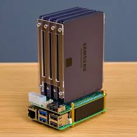

Raspberry Pi 5 NAS
this is a project i want to work on just so i can have a centralized place for my storage and not have to use any external drives or cloud service for everything. i also like the idea of accessing family photos from any device connected to the network.
i have also wanted to build something with a pi 5 so this felt like a practical project to work on.